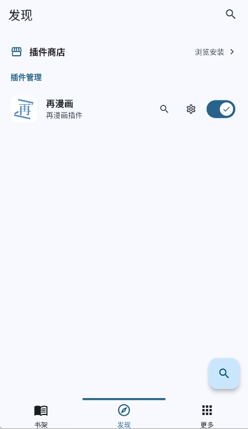
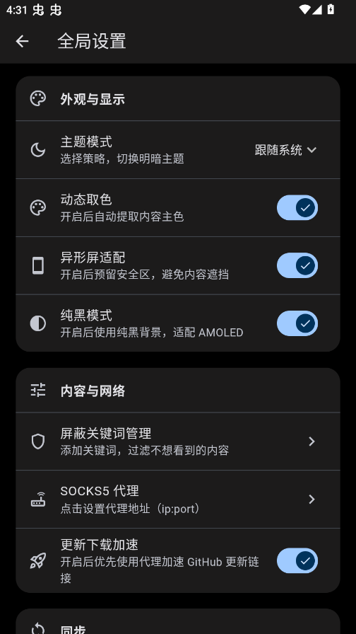

为什么我换掉了用了三年的漫画 App，投了 Breeze
一个对漫画 App 有重度依赖的老用户，从好奇装到 GBox 绕过安装限制，再到体验插件架构和 Rust 超分引擎，聊聊 Breeze 到底值不值得你折腾那一套流程。
说实话我本来没打算换漫画 App——三年了，一直用那款国产老 App，界面熟得闭着眼能点，书架里两百多本收藏整整齐齐。但有次刷推荐看到 Breeze 的截图，界面干净得不像个漫画阅读器，好奇心一上来就去breeze官网看了看设计思路，然后装了。没想到这一装，折腾了我快半个钟头。
第一眼：书架是空的？
装完点开，三个标签页孤零零摆在那儿：书架、发现、更多。书架是空的，发现页上半部分是插件商店的入口，下半部分空荡荡。我第一反应是"这 App 是不是坏了？"——你见过哪个漫画阅读器打开没有任何漫画的？
翻了翻才搞明白，Breeze 的设计逻辑跟市面上所有漫画 App 都不一样：它本体不包含任何漫画资源。搜索、分类、榜单、章节列表、图片加载——这些跟漫画源挂钩的功能，全靠外部插件提供。本体只负责阅读引擎、书架管理和插件运行时。
说实话这个思路挺反常识的，但仔细想又合理。传统漫画 App 为了覆盖尽可能多的源，内置了一堆没人用的东西，体积臃肿、启动慢、一个源挂了整个 App 都跟着卡。Breeze 把这些全拆出来，你装几个插件就用几个插件，不需要的就不装，本体保持干净。
安装：比想象中折腾
我用的是安卓，系统设置里开了未知来源之后，还是被国产 ROM 拦截了安装请求。这不是 Breeze 的问题——它没在国内应用商店上架，部分国产 ROM 出厂就锁了安装器，第三方 APK 装不上。
安装包从breeze下载拿。解决办法是用 GBox，一个轻量级的应用隔离容器。装上 GBox，把 Breeze APK 导进去装，就能绕过 ROM 的限制了。鸿蒙系统的用户我劝你直接用 GSpace，官方应用商店能下，兼容性比 GBox 好。
插件制：选源这件事，终于让我自己决定了
装好之后去插件商店转了一圈，差点装嗨了。哔咔、禁漫、ehentai、nhentai、拷贝漫画、绅士漫画、WEBTOON……光官方和社区维护的插件就有十九个。我先装了哔咔和禁漫，够用了。搜索直接在插件管理页面点搜索图标，跳到对应插件的搜索界面。

这种"本体干净、来源外置"的设计有几个好处我挺喜欢的：
- 灵活——新漫画源出来了，有人写个插件就能用，不用等 Breeze 本体更新。去年某个源页面结构变了，传统 App 等修复等了快一个月，Breeze 用户只需要更新一下插件就行。
- 解耦——Breeze 主项目和各插件由不同维护者负责，一个插件挂了不影响别的。
- 可定制——甚至可以自己写插件接私人漫画源，详细接口说明翻breeze文档就能看到。
当然也有代价。插件功能目前还在 Beta 阶段，接口可能随版本迭代变，普通用户影响不大，但开发者要跟上上游变化。
图片超分：Rust 引擎真不是吹的
我有个习惯，喜欢在平板上看漫画。但很多漫画源提供的只有 720p 甚至更低的图，在大屏上糊得不行。Breeze 有个超分辨率功能，打开之后用 Rust 写的引擎把低分辨率图片放大，同时保持细节。

实际用下来效果挺明显的——480p 的图放大之后清晰度能提升三成以上，但要注意不是什么情况都该开：
- 旗舰手机和桌面端：全程开着基本无感，体验提升最大；
- 中端手机：会耗电发热，只在低分辨率图片时开就行；
- 老设备：建议关了，超分是计算密集型操作，会卡；
- 墨水屏：直接关，黑白屏对细节要求低。
v3.0.25 之后支持手动下载导入模型文件，网络受限的时候可以从 GitHub Releases 或模型仓库下好模型扔到本地目录，Breeze 启动会自动扫描识别。这对国内用户来说挺实用的——自动下载经常超时。
还有几个细节挺打动我的
本地漫画支持。除了网络插件，Breeze 直接能读 ZIP、CBZ、CBR 压缩包和图片文件夹，不需要插件。我硬盘里存的那堆老漫画，直接从"更多"标签导入就能看，和网络漫画统一收纳在书架里。
追更体验。收藏的漫画有新章节会推通知，下载下来离线看没问题。书架支持按分类、标签、更新时间排序，两百多本找起来比之前那款 App 顺手。
WebDAV 同步。我手机和桌面端都装了，开了 WebDAV 同步之后，书架和阅读进度两边自动更新——地铁上手机看一半，回家打开电脑接着看，体验丝滑。
适合谁？
适合：漫画重度爱好者，尤其是追多个源的——不用再为了看不同漫画装三四个 App，一个 Breeze 加几个插件搞定；不喜欢臃肿 App 的，本体干净清爽；手里有一堆本地漫画文件想集中管理的。
不适合：怕折腾的小白用户——装插件、配 GBox、手动导入模型，这套流程加起来够劝退一批人；只想搜个漫画就看的，传统 App 开箱即用还是方便。
最后说句真心话
Breeze 不是那种"打开就能直接看漫画"的 App，它需要你花点时间折腾——装插件、调超分参数、配同步。但折腾完之后你会发现，插件制架构带来的自由度是传统漫画 App 给不了的：想加什么源自己装，不想用的就不装，书架干干净净只有你真正想看的东西。
我的书架现在有一百五十多本，比之前那个少了一半，但每一本都是我主动装的插件里找的。这种"自己决定看什么、用什么"的感觉，用了就回不去了。开源项目不怕单点故障，GitHub 是主仓库，Gitee 和 GitCode 上也有完整镜像，国内网络访问哪个都行。